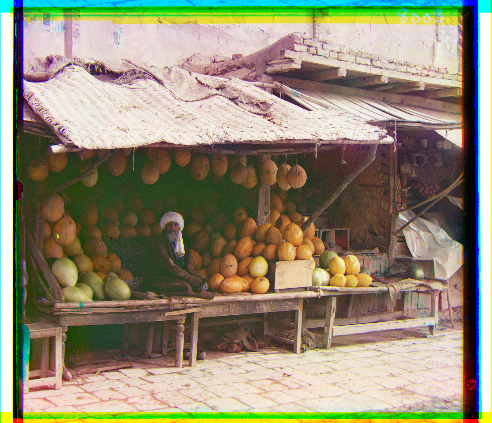

CS180/CS280A Project 1 — Colorizing the Prokudin-Gorskii Photo Collection
Offsets Table
| Image |
B→G (dx, dy) |
R→G (dx, dy) |
Method |
| emir.tif | (-24, -49) | (17, 57) | Multi-scale |
| italil.tif | (-21, -38) | (15, 39) | Multi-scale |
| monastery.jpg | (-2, 3) | (1, 6) | Single-scale |
| church.tif | (-4, -25) | (-8, 33) | Multi-scale |
| three_generations.tif | (-14, -53) | (-3, 58) | Multi-scale |
| lugano.tif | (16, -41) | (-13, 52) | Multi-scale |
| melons.tif | (-11, -82) | (4, 96) | Multi-scale |
| lastochikino.tif | (2, 3) | (-7, 78) | Multi-scale |
| tobolsk.jpg | (-3, -3) | (1, 4) | Single-scale |
| icon.tif | (-17, -41) | (5, 48) | Multi-scale |
| siren.tif | (6, -49) | (-18, 47) | Multi-scale |
| self_portrait.tif | (-29, -79) | (8, 98) | Multi-scale |
| harvesters.tif | (-17, -60) | (-3, 65) | Multi-scale |
All offsets are integer pixel shifts that align B and R channels to G.
Results
Single-scale Alignment Results
- Split the glass plate into three channels: B (reference), G, and R.
- Exhaustively search over a fixed window of (dx, dy) displacements for G and R relative to B.
- Crop borders to ignore artifacts, then compute SSD or NCC for each candidate displacement.
- Select the displacement with the best score and stack the shifted channels into an RGB image.
Multi-scale Alignment Results
- Split into B, G, and R channels and build Gaussian pyramids for each.
- Start at the coarsest level, estimate displacement using SSD or NCC.
- Scale the displacement by 2 and use it as the starting point at the next finer level.
- Refine at each level until full resolution is reached, producing efficient and robust alignment for large images.
